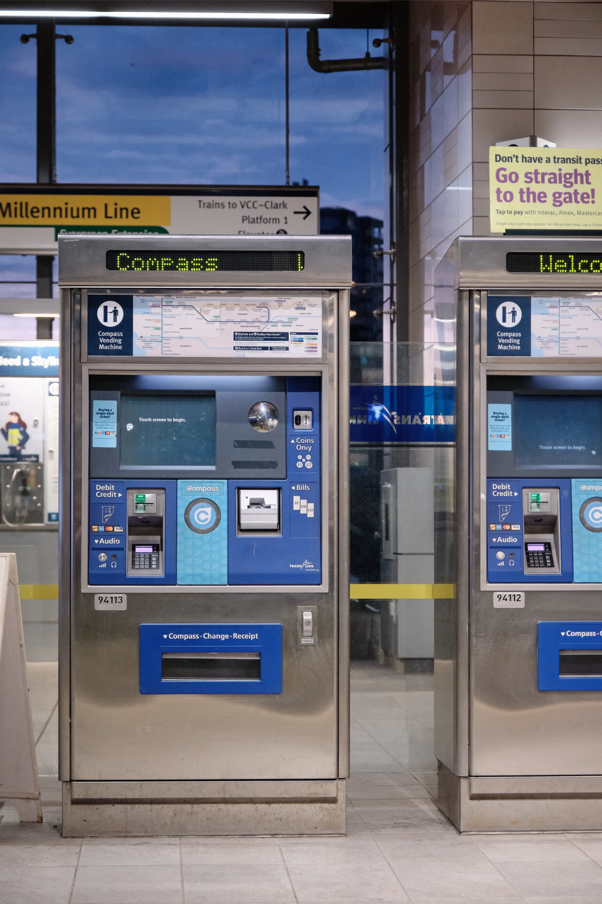

What it is
We designed an interactive transit fare map that replaces the existing map (headliner) on TransLink’s SkyTrain (LRT) ticket machines.
Its goal is to reduce confusion about the zone-based fare system amongst new and inexperienced riders. Our map displays the zone system based on the time of day and the fare riders need to purchase to get to their destination. It also visualizes where riders can travel when selecting a specific ticket from the machine.
Watch Elijah's journey
What I learned
We didn't know that this map would end up as the project's solution. Our team of four learned and applied various design methods to understand how transit riders use SkyTrain station entrances, which informed and led us to design the map.
Outside of developing hard skills, I focused on crafting presentations grounded in storytelling and hosting participatory design workshops with stakeholders.
A SkyTrain station where we interviewed riders

Working on my hard skills
Our early success of conducting ethnography, analyzing its qualitative data, and narrowing our scope put us on a stable path towards our final design concept.
I interviewed two transit users and three transit staff. With a total of 14 different perspectives, we found 27 very specific themes from our interview data through the use of thematic analysis.
I felt the need to ensure we designed in a broader scope, so I advocated for a few more rounds of thematic analysis by explaining that broader themes could help us keep an open perspective on potential solutions. I got buy-in from the team and we burned the midnight oil to end up with three final insights after two more rounds of analysis and running our themes through a decision matrix.
The rich insights we gained from this process ensured our personas and user journeys were backed by reliable data. Choosing to focus on a few specific issues also helped us feel grounded in the design process.
Hosting stakeholder workshops
I’ve never had experience hosting workshops. As a first timer, there’s bound to be beginner's luck but also messiness.
The first
participatory workshop
was a resounding success. Participants were
comfortable with one another and we found insights (i.e. safety and accessibility)
that we hadn't considered previously. However, after the workshop, one participant
felt like I gave them
too many options to complete the tasks; that I should
know what is going to provide the most helpful responses for [our]
project.
As a team, we iterated on our instructions, all the way down to
what writing utensils everyone was using.
Luck wore off in the second workshop. Participants weren’t as engaged and we missed the mark on making them comfortable. There was a tension in the room that never went away. Reflecting on that workshop, I should have had a backup plan and intervened to help improve the atmosphere rather than just powering through the workshop materials.
In-person workshop drawings

Bringing users’ voices into the business world
Expectations of our results felt high: we were undergraduates that had never collaborated with professional designers before.
One part of a design ethnographer’s job is to bring the voices and lives of the
end
user
or consumer out of the home and into the business world
(Design
Ethnography).
We needed to understand that buy-in is an important facet in design. Without it, projects get canned. For us, buy-in was making the collaboration worthwhile for TransLink. Some of it was done through sheer hard work, but the other half involved strategic presenting of our results.
I took multiple steps to create rich presentations for TransLink. The final presentation was the culmination of all of these efforts:
- I revised our in-class presentation to align with TransLink's shared knowledge.
- We changed terminology to be more familiar and professional with TransLink.
- I used persona-driven stories in combination with clear imagery to give context to riders' issues.
- I utilized Figma’s powerful prototyping tools to integrate our mockup into our slides to clearly articulate how our design works.
The combination of the points above led us to have a succinct, professional, and visually engaging final presentation based in ethnographic data.
Project timeline summarized for TransLink

Choosing our design direction
Through a brainstorming workshop, we conceived three concepts that addressed different needs of transit riders. One concept proposed a redesigned ticket machine interface as many riders expressed frustration using its current design.
TransLink gave us the green light to work on this concept but we were hesitant to pursue a redesign. A successful redesign would cater towards the many different transit riders that use the machine, increasing our design scope and affording us limited time to cater to each group of riders.
Comparitevely, we focused on new riders in our map concept as we noticed they were the main group looking at and using the transit map above the ticket machine. Other riders will still use the map, but we were more confident in our ethnographic data and our ability to design for a specific group of people as opposed to every type of transit rider. This, of course, is the concept we moved forward with.
SkyTrain ticket machines

Final thoughts
The project was a success in the eyes of SFU, TransLink, and our team. I felt like we were on cruise control throughout the project: there was very little course correction or other setbacks that typically arise in student projects.
If we were to continue this project, I would iterate on the design using insights grounded in design evaluation. How do other transit riders react to this map? Does it still make sense in their perspective, or have we catered too much to the new rider?